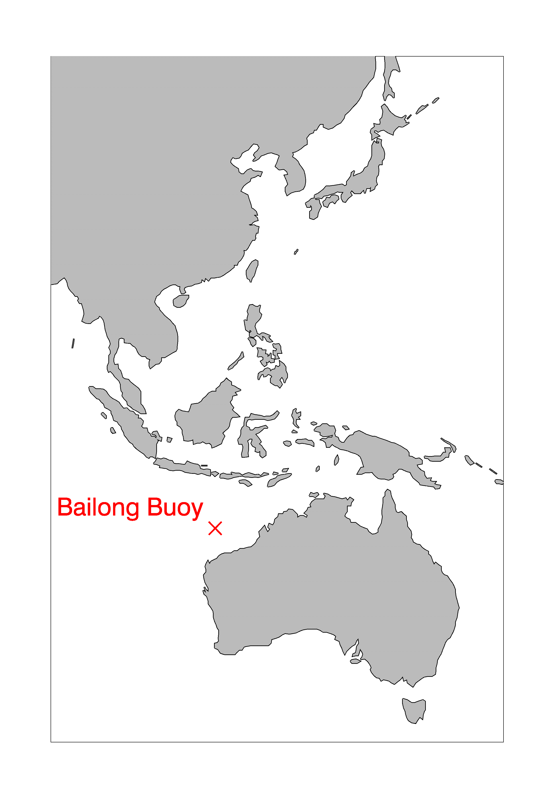
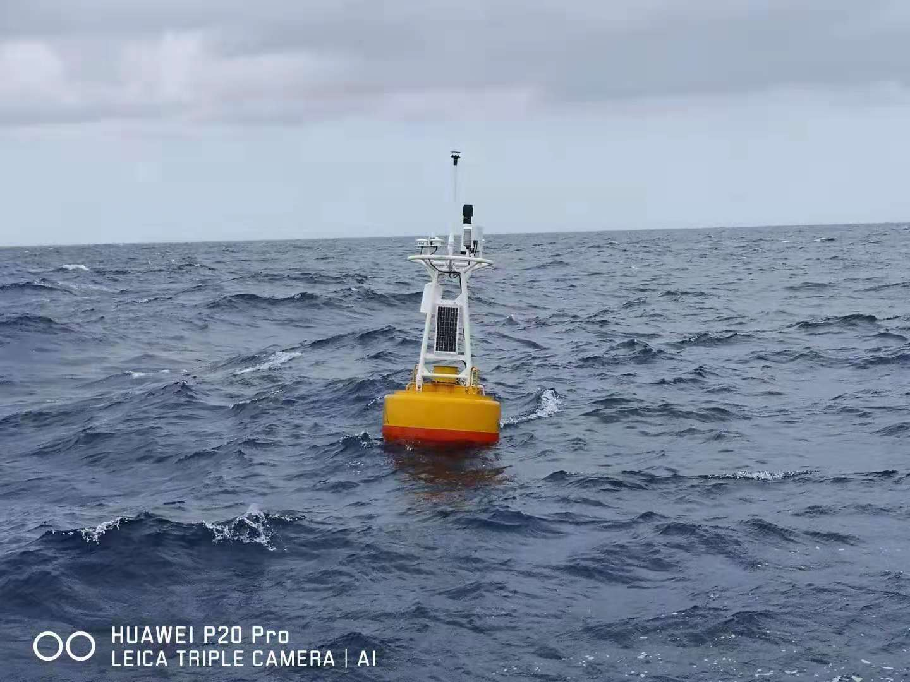
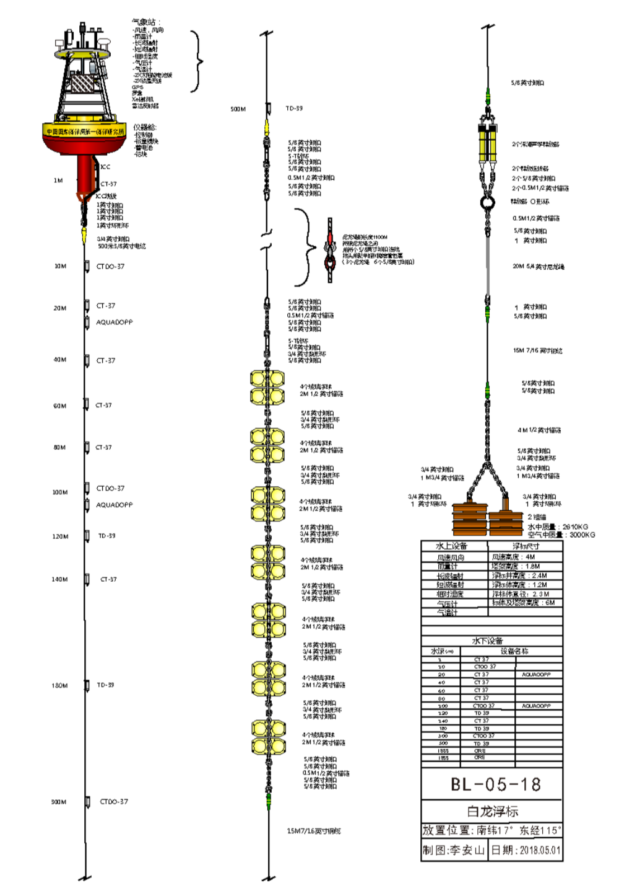

MJO and Australian Monsoon Onset Study (MAMOS) and Coupled Warm Pool Dynamics in the Indo-Pacific
Objectives:
To capture the air-sea interactions during the MJO and Australian Monsoon.
Period:
November 2018 - March 2019
Participants:
China - The First Institute of Oceanography / SOA
Australia - CSHOR (Center for Southern Hemisphere Oceans Research)
Area:

Observations:
Bailong Buoy, which can measure sea surface meteorological parameters and sub-surface oceanic profile, has been deployed at (115-13E, 16-51S) since November 2018. Eight Argo floats were released nearby Bailong buoy from the R/V Offshore Limitless.

Bailong buoy photo shot from R/V Offshore Limitless after its deployment

The technical configuration of the Bailong buoy
For more information visit: cshor.csiro.au/projects/coupled-warm-pool-dynamics-in-the-indo-pacific